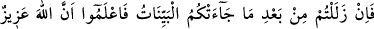
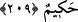
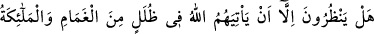
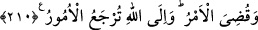

kalan mesâfe demektir.
209. Size (Kur’ân ve Sünnet gibi) apaçık deliller geldikten sonra, eğer barıştan
saparsanız, şunu iyi bilin ki Allah azîzdir, hakîmdir.
“Zelel” kelimesi lügatte “ayak kayması” anlamına gelir. Daha sonra bu kelime, doğru
itikad ve sâlih amelden sapmak, yüz çevirmek mânâsında kullanılmıştır. Buna göre mânâ
şöyle olur: Çağrıldığınız ve girmeniz istenen İslâm hakkında apaçık deliller ve şâhidler
geldikten sonra, Hak’tan sapar, ilim ya da amel bakımından zulme meylederseniz bilin
ki, Allah Aziz’dir; yapmak istediğini yapar. Sizden intikam almasına mâni olacak kimse
yoktur. Hakîm’dir; haklı bir intikam alır.
Âyette İslâm’a girmekten kaçınan kimselere etkili bir tehdîd vardır. Meselâ bir baba
evlâdına: “Bana karşı gelirsen, beni tanırsın, karşı gelenlere tavrımın nasıl olduğunu da
bilirsin” derse, bu sözü “döğerim, çarparım” gibi sözlerinden daha etkili olur. Âyet
böyle bir tehdîd ihtivâ ettiği gibi; “Hakim” kelimesiyle de bir vâd içermektedir. Zira
hikmetin gereği, iyi kimse ile kötünün birbirinden ayrılması ve iyinin mükâfatlandırılıp
kötünün de kötülüğünün cezâsını çekmesidir. Hakîm’den beklenen budur. Hikmet ve
rahmetin gereği de budur.
210. Onlar, ille de buluttan gölgeler içinde Allah’ın ve meleklerinin gelmesini mi
beklerler? Halbuki iş bitirilmiştir. (Allah nizamı artık değişmez.) Bütün işler
yalnızca Allah’a döndürülür.
Âyetteki “Yenzuru” fiili, beklemek anlamındaki “yentazıru” mânâsınadır. İslâm’a
girmeyi terkeden ve şeytanın adımlarına tâbi olan kimseler, ancak Allah azâbının
gölgeler içinde gelmesini bekliyorlar değil mi? Âyet-i kerîme’deki “Allah’ın gelmesi”
tabiri, “Allah’ın azâbının gelmesi” demektir. Çünkü Allah Teâlâ gelmek, gitmek gibi
sonradan olan yaratıklara aid fiil ve vasıflardan münezzehtir. Kadîm olan Allah bu gibi
şeylerle muttasıf olamaz.
Hazret-i Ali’ye: “Yer ve gökler yaratılmadan önce Hak Teâlâ hazretleri nerede
idi?” diye sual edildi. O da dedi ki: “Nerede sorusu bir mekân ifâde eder. Halbuki
herhangi bir mekân bulunmaz iken de Allah mevcûddu. Hak Teâlâ, bugün de mekândan